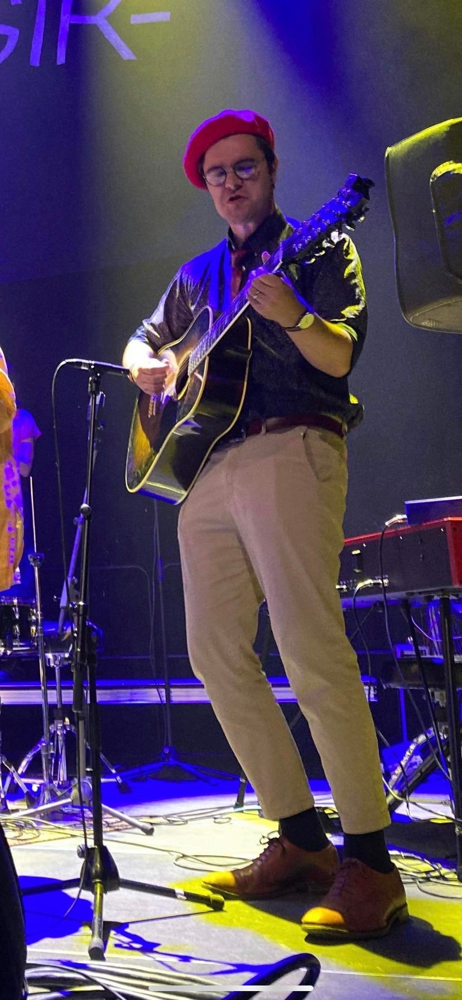

I am a historical linguist and philologist, currently active as PhD Candidate of Indo-European linguistics at Uppsala University. My PhD project is an investigation into the accent systems of the Luwic languages in both synchrony and diachrony. I specialize in Anatolian languages, although I am interested in all things relating to language and language change, including reconstruction, phylogenetics, and the phonological decipherment of complex writing systems.
On this website, you may find my publications and other things about me. I am always open to new acquaintances and new ideas, so please do not hesitate to contact me if you can offer any of those things.
Click here for all of my publications, complete with download links.
Click here for my CV.
